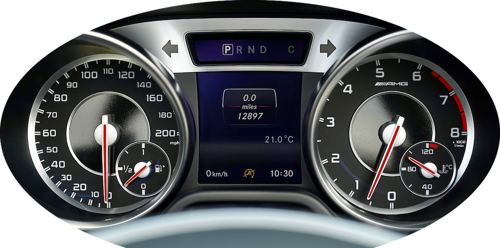
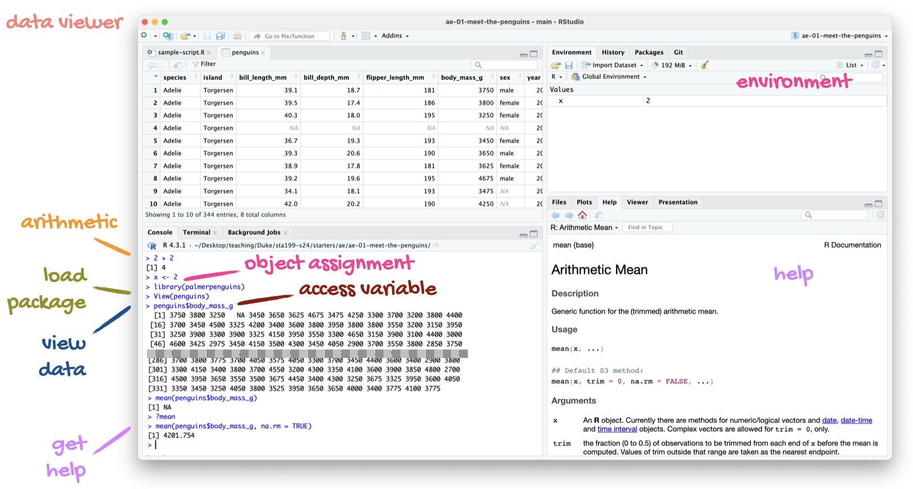
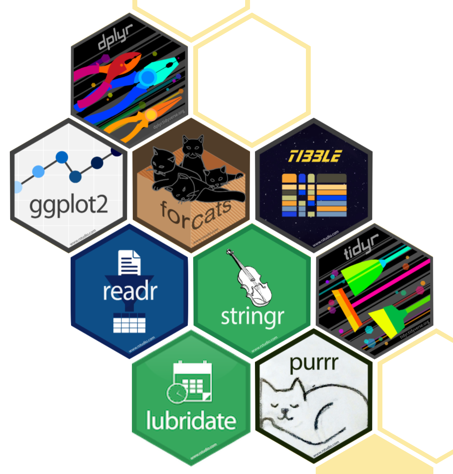

do_this(to_this)
do_that(to_this, to_that, with_those)Meet the toolkit: R and RStudio
Data visualization and transformation
Learning goals
By the end of the course, you will be able to…
gain insights from data
gain insights from data, using modern programming tools and techniques
gain insights from data, using modern programming tools and techniques, reproducibly with literate programming
gain insights from data, using modern programming tools and techniques, reproducibly with literate programming and version control
By the end of the course, you will be able to…
gain insights from data
gain insights from data, using modern programming tools and techniques
gain insights from data, using modern programming tools and techniques, reproducibly with literate programming
gain insights from data, using modern programming tools and techniques, reproducibly with literate programming and version control
R and RStudio
- Open-source statistical programming language
- Also an environment for statistical computing and graphics
- Convenient interface for R called an IDE (integrated development environment), e.g. “I write R code in the RStudio IDE”
- Not a requirement for programming with R, but it’s very commonly used by R programmers and data scientists
R vs. RStudio

“engine”


“dashboard”

R packages
Packages are the fundamental units of reproducible R code – they include reusable R functions, documentation of these functions, and sample data
Packages are how the community extends R
As of April 2024, there are over 20,000 R packages available on CRAN (the Comprehensive R Archive Network)
We’re going to work with a small (but important) subset of these!
Let’s take a tour of
 and
and 
Tour recap: R and RStudio

A short list (for now) of R essentials
- Functions are (most often) verbs, followed by what they will be applied to in parentheses:
. . .
- Packages are installed with the
install.packages()function and loaded with thelibraryfunction, once per session:
install.packages("package_name")
library(package_name)R essentials (continued)
- Columns (variables) in data frames are accessed with
$:
dataframe$var_name. . .
- Object documentation can be accessed with
?
?meantidyverse

The tidyverse is an opinionated collection of R packages designed for data science
All packages share an underlying philosophy and a common grammar
Acknowledgements
- Photo of car engine: Image by Davgood Kirshot from Pixabay
- Photo of car dashboard: Image by VariousPhotography from Pixabay
- Number of R packages: CRAN contributed packages